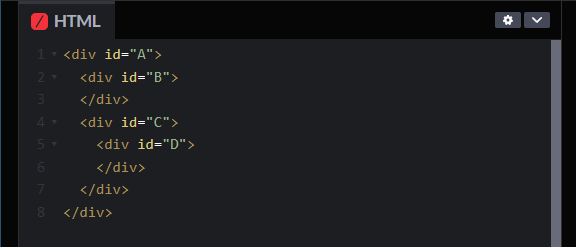
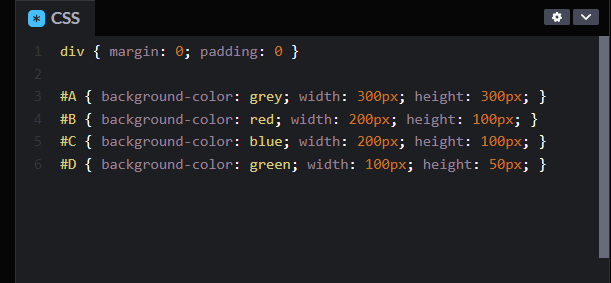
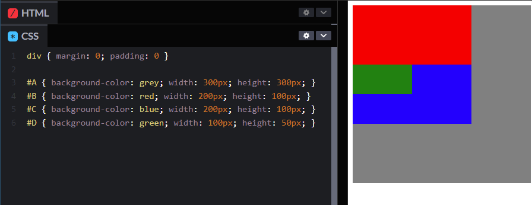
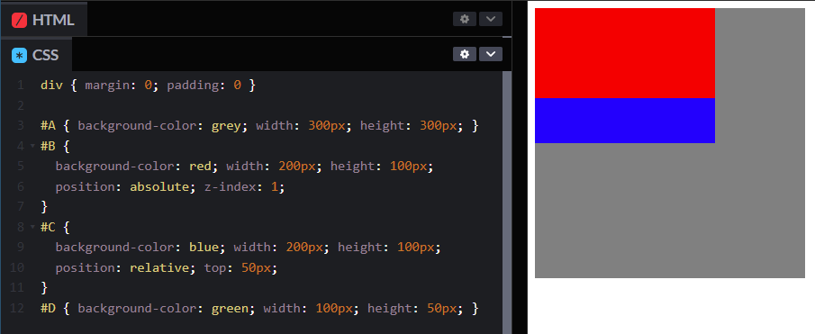

Element Positioning:
A CSS Tech exploration
This page explores the CSS position attributes of relative, absolute and fixed.
When building websites, the box-model gives a lot of clarity when thinking about how different elements are positioned. A tag, or element usually contains its children (i.e. elements inside it).
Let's look at an example:

This code has four div elements. The div encompassing all the others has an id of A. Inside it are B and C. Finally, within C is div D. We can think of A as the parent of B and C. It is also the grandparent of D. This becomes important later.
Without some CSS, it's hard to see how they might be represented, so let's give the elements some basic properties:
We make A grey and the biggest at 300x300 pixels. B is red and 200X100. Next is C, the same size but blue. Lastly, D is the smallest at 100x50 pixels and coloured green.
This is the result:

As expected, our div elements are all the correct sizes. Because A is the encompassing element, it is drawn to the page first, and therefore under the others. Next B and C are drawn. Notice that they respect the box-model and are placed one after the other with no overlap. Lastly D is overlaid on C, because it is the child of C. Normally this is great, but there may be circumstances where we want to define positioning outside of the regular model.
Relative positioning
So, what if we wanted to move the blue box (C) down 50 pixels. Would D move too? We could add a blank div in between it and the red box, but let's use position: relative; and specify a distance to move it instead.
Cool! Let's explore what happened. We told C to make it's position relative. In this case, relative to where it should be (as it was in our initial render above). top: 50px; tells C to imagine there are 50 blank pixels above it after B. We could also use left: to move C right, etc.
Another observation to make is that our green box (D) also moved with C. Why? Because it is a child of C. If we think of C as a container, D is inside it. Makes sense, right?
Absolute positioning
Now we've arrived at our next experiment: position: absolute; Unlike relative positioning, absolute positioning allows an element to position as if it is starting from the parent's origin, but other children of the parent behave as if it doesn't exist.
We told B to position: relative; and move horizontally 350pixels, but C still remains at the same vertical position as it was before. In other words, C still respects D's original positioning. We can change that with position: absolute;
Now C positions as if it is the only child of A. B is in effect, free from the parent-child position heirachy. We can do interesting things with this knowledge, like overlap B and C, or even draw B on top of C.

With a trick using the property z-index: 1; we can effectively tell B to put itself over C. C and D still both exist, but because they aren't respecting B's position in the heirachy, they don't get out of its way.
Fixed positioning
Unlike relative and absolute positioning, fixed position elements don't determine their place from their parents or grandparents. They are placed relative to the viewport of the browser window itself. In effect, they don't move even when the page is scrolled. The background of this page is fixed. Actually, the hammer is also a fixed element that has been on the page the whole time.
To determine where a fixed element is placed, simply use the properties top: bottom: left: and right:. For example, the hammer uses bottom: 5px; right: 5px; to be placed in bottom right corner of the viewport.
Try it yourself!
See the Pen Absolute, Relative and Fixed positioning. by David Kavenga (@david-kavenga) on CodePen.